前言
在我开始写博客之前我已经学完了前面的五次课，并且完成了作业0和作业1。在我简单回顾之后，我本来是想把这一块补上的，因为前几节课还是有很多需要记住的点的。但是犹豫再三，我还是放弃了，因为还是那句话，这意味着我要补上前面的很多内容，会带来很多重复的工作量让我心生退却。不过我也给自己立了一个 Flag ，如果我下一次用到相关知识，或者说复习的时候忘记了，我就把它加上，这样它对我来说就是一个更加有意义的工作量了，我会更容易接受。
Antialiasing
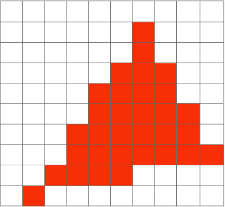锯齿是一种图片走样的结果，比如图中本来是一个三角形，但经过测试像素中心点在三角形内部还是外部并且将在内部的像素填上颜色的方式呈现在屏幕上时，就发生了锯齿的现象。所以我们要采用反走样技术来解决这种现象。
在这之前我们先看看在计算机图形学中的采样。
Rasterization = Sample 2D Positions，栅格化也就是采样2D平面内的位置
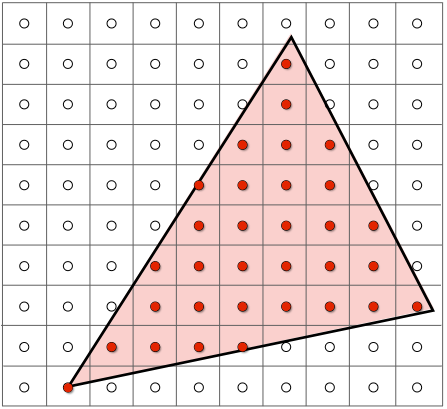Photograph = Sample Image Sensor Plane，照片也就是采样图像传感器平面
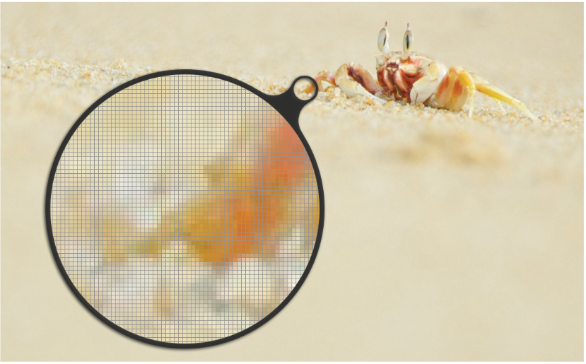Video = Sample Time，视频也就是对时间采样，每隔一定时间采样一次
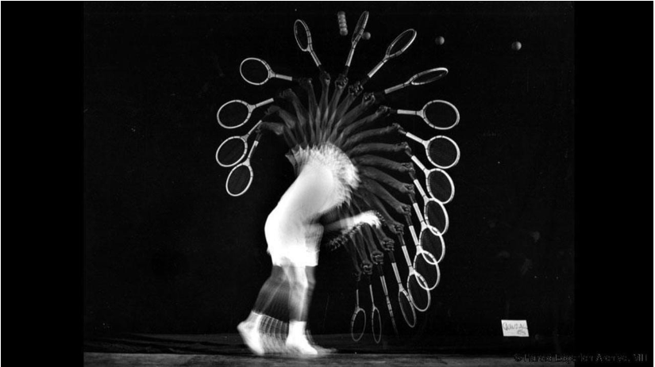Sampling Artifacts（Errors / Mistakes / Inaccuracies）in Computer Graphics
计算机图形学中由采样带来的“瑕疵”有很多，包括锯齿、摩尔纹、车轮效应。
Jaggies（Staircase Pattern）：锯齿，也被称作楼梯模式
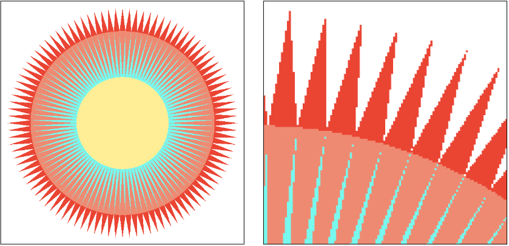Moiré Patterns in Imaging：摩尔纹
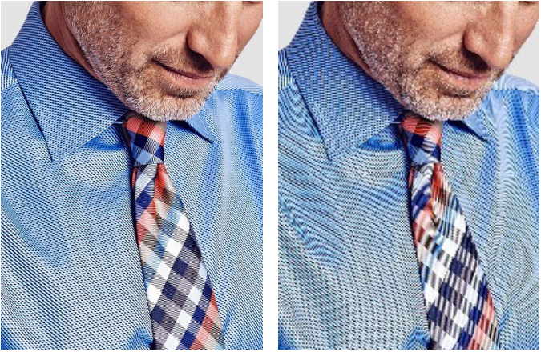这是由于为了增加成像的速度，采用了跳过奇数行和奇数列的策略所导致。
Wagon Wheel Illusion (False Motion)：车轮效应，会让人看到错误的运动方向
这些 Artifacts 产生的背后原因，是信号变化太快（高频），但是采样的速度太慢。
Antialiasing Idea: Blurring (Pre-Filtering) Before Sampling
在采样前先过滤，可以有效地缓解锯齿的情况。
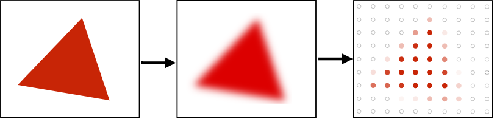那么我们可不可以将这个过程反过来，也就是先采样再模糊？
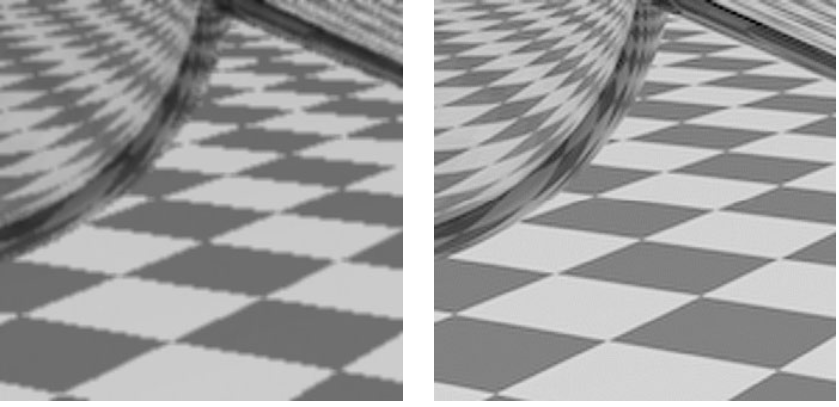答案是不可以的，左侧是先采样再过滤的结果，直观来说会让已经走样产生锯齿的图片变得更加模糊。
但是为什么欠采样会引入混叠以及为什么预过滤后采样可以做抗锯齿？需要深入研究根本原因，看看如何实现抗锯齿栅格化。
Frequency Domain
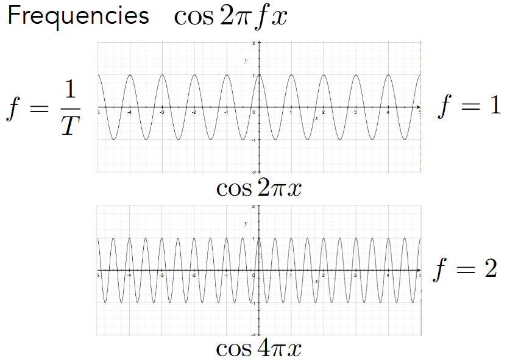在频域内，可以用正弦或余弦函数来表示信号，其中用 f 来表示频率，可以看到频率 f 越大，信号变化的越快。
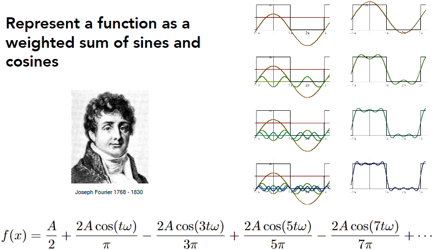通过傅里叶变换可以将函数表示为正弦和余弦的加权和。
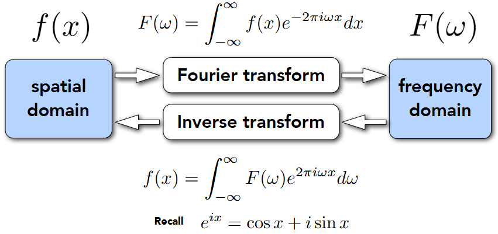这样也就是将原来空间域的信号通过傅里叶变换到了频域上的信号，而频域上的信号也可以通过逆变换转回空间域。
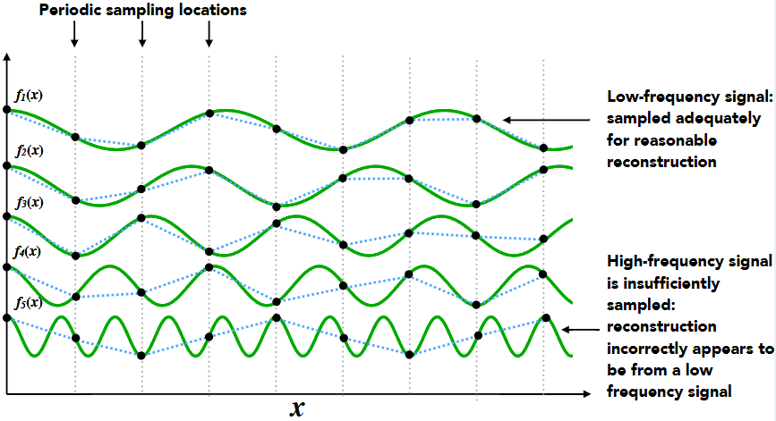更高的频率需要更快的采样，否则会在重建信号时错误地显示为来自低频信号。
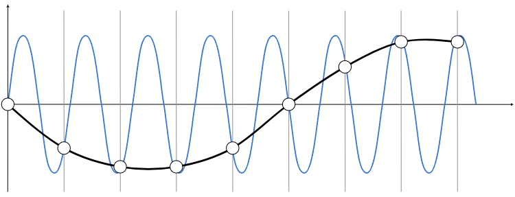高频信号采样不足：样本错误地显示为来自低频信号在给定采样率下无法区分的两个频率称为“aliases”。
对频域的信息有了一点了解之后，那么过滤操作就可以看作去除某些频率的内容。
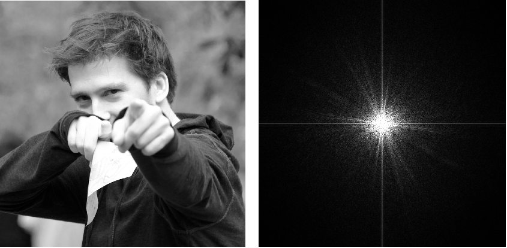可视化图像转化为频率信号的内容，亮起的部分表示这里有该频率的信号。距离图像中心越近则频率越低；距离图像越远，则频率越高。可以看到在中心处的横向和纵向上都有一条线，这是因为在生成频率信号的时候会对同一张图片不断排列，这样从前一张图片到下一张图片的时候会发生突变，因此最终在这里产生两条线也就是可视化的高频信号，其实我们可以将之忽略。

这里将中心处的信号过滤掉，只留下高频信号，因此也叫做“High-pass filter”高通滤波。可以看到在过滤掉低频信号之后，原来的图片只留下了一些轮廓信息。这也很容易理解，在边界处，信号变化剧烈，所以是高频信号。
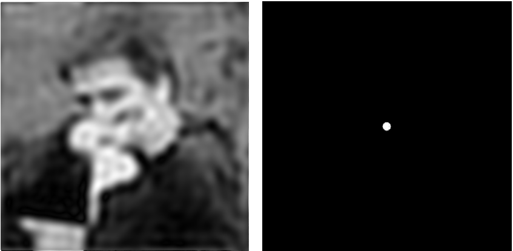这里将中心处以外的信号过滤掉，只留下低频信号，因此也叫做“Low-pass filter”低通滤波。可以看到在过滤掉高频信号之后，原来的图片变得十分模糊。这也很容易理解，因为过滤了高频信号，图片的轮廓变得不清晰了。
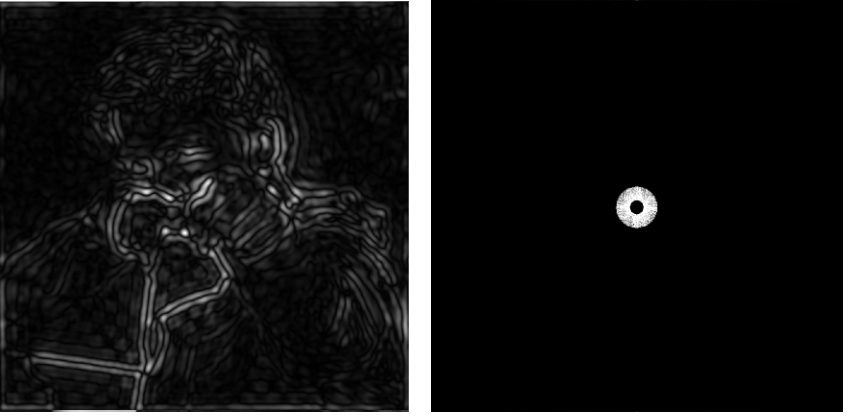这里同时过滤低频和高频信号，留下一部分中间的信号。可以看到原来的图片留下了一些不易察觉的轮廓信息。
在这里再引入一个概念来将过滤的概念引入到栅格化的过程当中。也就是Convolution——卷积。我们可以认为 Filtering = Convolution（= Averaging），都是带来了一个模糊的结果。
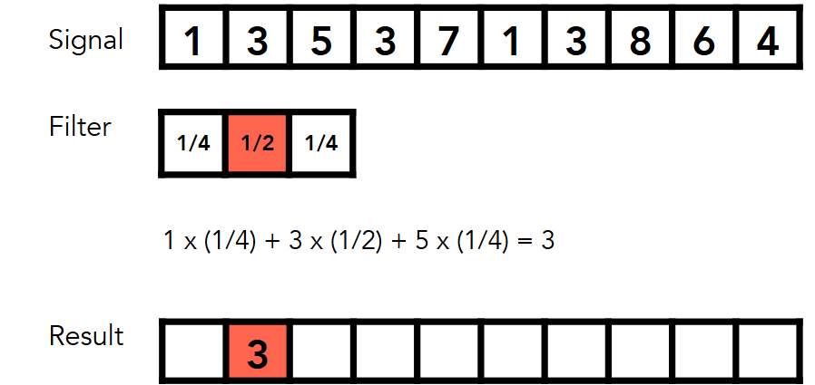卷积实际上就是利用一个卷积核，本质上是一个矩阵，来对图像上的像素利用它自己以及周围的像素来进行加权平均。通常用的是3×3的矩阵。
Convolution Theorem
卷积定理：空间域中的卷积等于频域中的乘法，反之亦然。
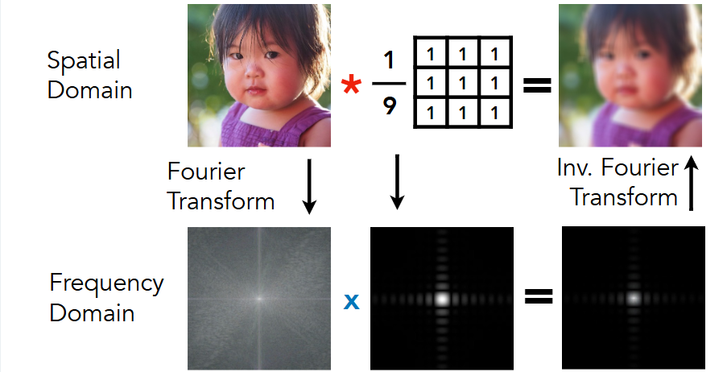如图所示，对于图像像素的卷积操作就等于频域中的乘法也就是滤波。
 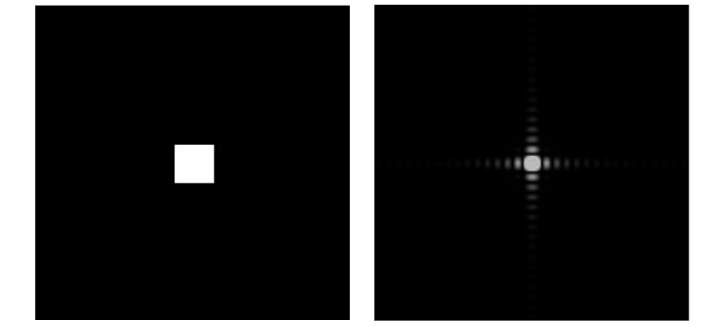
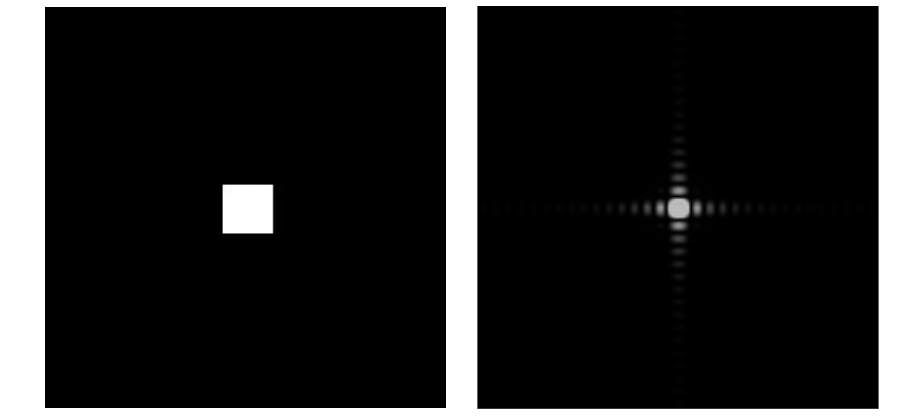
这个box filter采用的是3×3的矩阵，它对应的滤波器是一个 Low-Pass Filter 。并且如果这个box越大，那么相对应的滤波器能过滤的频率越低。这一点可以通过极限法来想，比如把这个box设置的比一个像素还小，那么对于信号就没有任何处理，所以所有频率都可以通过；如果把这个box设置成一整个图片，那么整张图片会变得平均，所以高频信号都没了，只剩下超低的频率。
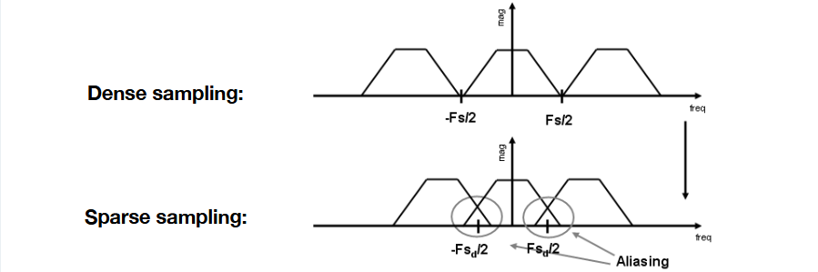现在我们回到采样上，那么采样其实就是重复频率中的内容，并且采集的越密集，我们就越有可能还原频率本来的模样。所以现在我们对于前面的两个问题，就知道了答案。为什么欠采样会引入混叠是因为对频率信号采样不足不能还原频率本身模样，而导致一些频率信号丢失，前后的频率信号重叠；为什么预过滤后采样可以抗锯齿是因为在重复之前使傅里叶内容“更窄”，即在采样前过滤掉高频。
如下图所示：
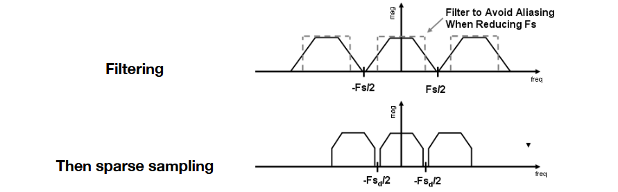对于栅格化过程中，我们就可以采用抗锯齿采样。
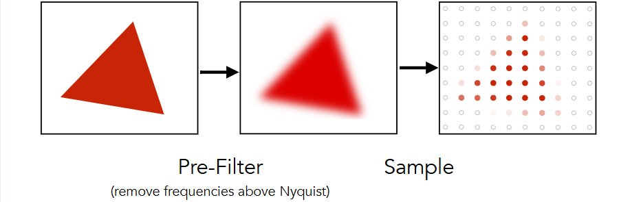先采用过滤操作，使得三角形中的抗锯齿边缘的像素值采用了中间值。
Antialiasing in practice
一个常规的方法便是通过1像素的方框对 f（x，y） 进行卷积来抗锯齿，通过计算平均像素值进行抗锯齿。在栅格化一个三角形时，像素区域内的平均值 f（x，y） = inside（triangle，x，y） 等于三角形覆盖的像素面积。如下图所示：
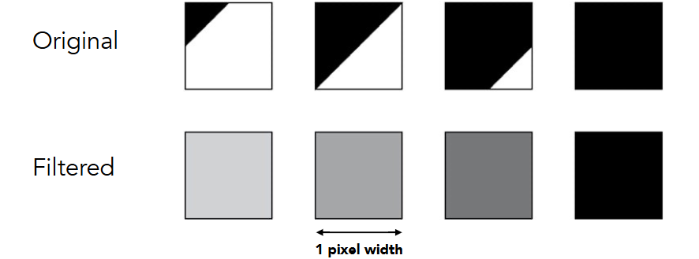还可以通过超级采样（MSAA）来抗锯齿，这是对上面方法的优化。在每个像素中取 NxN 样本。根据有多少样本被覆盖，然后计算 被覆盖的样本 / N×N 来给定新的“平均值”。如图所示：
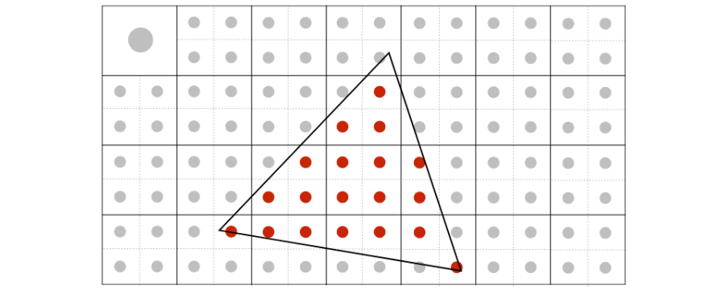 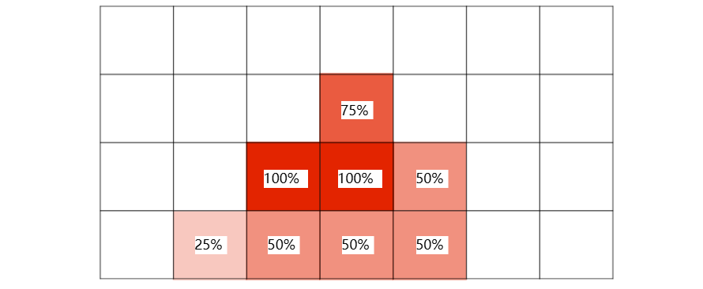虽然MSAA的效果可能更好，但是它的代价是更多的计算。然后是老师对于抗锯齿的一些想法：
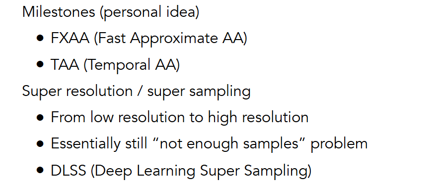